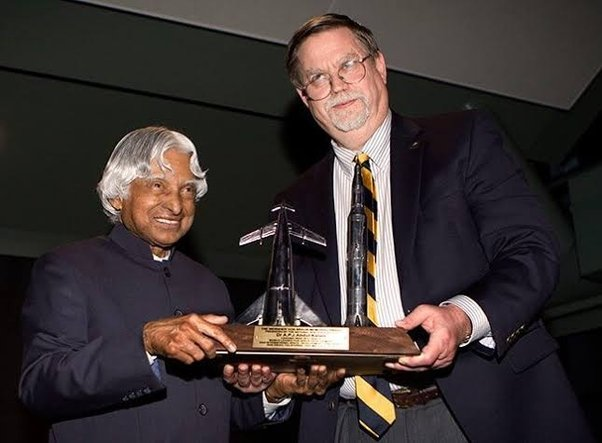

Kalam received several honours during his lifetime. In 1981, he was granted the “Padma Bhusan,” the Republic of India’s third-highest civilian honour. Then, in 1990, he was granted the Padma Vibhushan, the Republic of India’s second-highest civilian honour.
In 1997, the Indian government awarded Abdul Kalam the “Bharat Ratna,” the Republic of India’s highest civilian honour, in addition to the “Indira Gandhi Award of National Integration” even by “Indian National Congress,” which is named after former Prime Minister Indira Gandhi. The following year, in 1998, he was given the “Veer Savarkar Award.” The SASTRA “Ramanujan Award” was bestowed to him in 2000. In 2007, he was awarded the “King Charles II Medal” by the United Kingdom for his contributions to scientific advancements in India. In 2009, he was awarded the “Hoover Medal,” an American honour awarded to outstanding persons who make extracurricular efforts.

डॉ. एपीजे अब्दुल कलाम की उपलब्धियां
अब्दुल कलाम इस देश के बेहतरीन नेताओं में से एक हैं। उनकी उपलब्धियों और बहुत सफल जीवन जीने के लिए उनकी प्रशंसा की जाती है। उनके जीने का तरीका और उनका नज़रिया लोगों को प्रेरित करता रहेगा।
नीचे उनकी अनगिनत उपलब्धियों को सम्मान देने की कोशिश की गई सूची दी गई है:
1960 में मद्रास इंस्टीट्यूट ऑफ टेक्नोलॉजी से स्नातक की पढ़ाई पूरी करने के बाद डॉ. कलाम रक्षा अनुसंधान एवं विकास संगठन (डीआरडीओ) में शामिल हो गए।
डीआरडीओ में कलाम भारतीय सेना के लिए हेलीकॉप्टर डिजाइन करने के लिए जिम्मेदार थे।
भारतीय अंतरिक्ष अनुसंधान संगठन (इसरो) में शामिल होने के बाद डॉ. कलाम को भारत के पहले स्वदेशी उपग्रह प्रक्षेपण यान एसएलवी-III के परियोजना निदेशक के रूप में चुना गया।
जुलाई 1980 में एस.एल.वी.-III द्वारा रोहिणी उपग्रह को सफलतापूर्वक कक्षा में प्रक्षेपित करने के बाद, डॉ. कलाम ने भारत के अंतरिक्ष कार्यक्रम को व्यापक स्तर पर विस्तारित करना शुरू कर दिया।